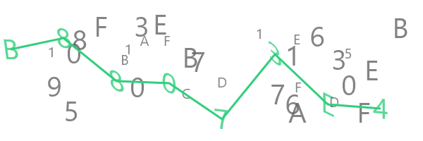

captcha-canvas
captcha-canvas


A powerful and customizable captcha generator for Node.js, powered by skia-canvas.

Features
- Highly Customizable: Control every aspect of the captcha, including text, fonts, colors, backgrounds, and more.
- Secure: Generates complex captchas that are difficult for OCR bots to solve.
- Flexible: Use the simple
createCaptchafor quick generation or theCaptchaGeneratorclass for more advanced use cases. - Background Support: Add custom background images to your captchas.
- Lightweight: No bundled dependencies, keeping your project lean.
Installation
Before installing captcha-canvas, you need to install its peer dependency, skia-canvas.
npm install skia-canvas
npm install captcha-canvas
Quick Start
The easiest way to generate a captcha is with the createCaptcha function.
const fs = require("fs");
const { createCaptchaSync } = require("captcha-canvas");
const { image, text } = createCaptchaSync(100, 300);
fs.writeFileSync("captcha.png", image);
console.log("Captcha text:", text);
This will generate a file named captcha.png with a random captcha image.
Advanced Usage
For more control over the captcha generation process, use the CaptchaGenerator class.
Basic Example
const fs = require("fs");
const { CaptchaGenerator } = require("captcha-canvas");
const captcha = new CaptchaGenerator()
.setDimension(150, 450)
.setCaptcha({ font: "Comic Sans", size: 60, color: "deeppink" })
.setTrace({ color: "deeppink" })
.setDecoy({ color: "deeppink" });
const buffer = captcha.generateSync();
fs.writeFileSync("captcha.png", buffer);
console.log("Captcha text:", captcha.text);
Customizing the Captcha
You can customize the captcha text, trace lines, and decoy characters.
Setting Dimensions
captcha.setDimension(200, 600); // height, width
Setting a Background Image
captcha.setBackground("./path/to/background.png");
Customizing the Captcha Text
captcha.setCaptcha({
text: "MyCustomText",
color: "#2D3748",
font: "Arial",
size: 70,
skew: true,
rotate: 10, // rotation angle in degrees
opacity: 0.8
});
Customizing the Trace Line
The trace line is drawn over the captcha text.
captcha.setTrace({
color: "#2D3748",
size: 5,
opacity: 0.7
});
Customizing the Decoy Characters
Decoy characters are random characters added to the background to make the captcha harder to read for bots.
captcha.setDecoy({
color: "#A0AEC0",
font: "Arial",
size: 40,
opacity: 0.5,
total: 25 // number of decoy characters
});
Asynchronous Generation
If you are using a background image, you should use the asynchronous generate() method.
const buffer = await captcha.generate();
fs.writeFileSync("captcha.png", buffer);
API Reference
For a full list of options and methods, please see the API documentation.
Contributing
Contributions are welcome! Please open an issue to report bugs or suggest features.
License
This project is licensed under the Apache-2.0 License. See the LICENSE file for details.
Contributors ✨
Thanks goes to these wonderful people (emoji key):
 Shashank 📆 |
 TheDeadCraftPT 🐛 |
 IchiiDev 🐛 |
 Ikramullah 📖 💻 |
 ryanhex53 💻 |
This project follows the all-contributors specification. Contributions of any kind welcome!